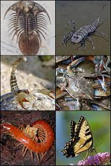
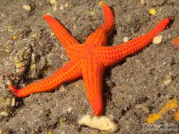
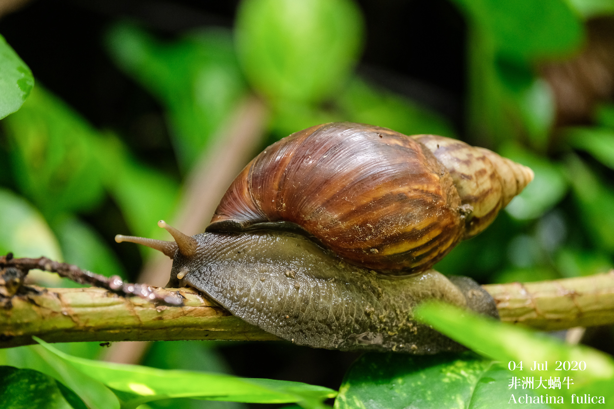

constituyen el filo más numeroso y diverso del reino animal. El grupo incluye animales invertebrados dotados de un esqueleto externo y apéndices articulados; los insectos, arácnidos, crustáceos y miriápodos, entre otros. Tienen exoesqueleto de quitina y patas articuladas son el mayor grupo de los animales invertebrados, que no tienen columna vertebral. Se caracterizan por tener patas articuladas y un exoesqueleto que los protege. A este grupo pertenecen los Hexapoda (insectos), los Chelicerata (arácnidos), los Crustácea (crustáceos) y los Myriapoda (miriápodos).
Los equinodermos son un filo de animales deuteróstomos exclusivamente marinos y bentónicos. Su nombre alude a su exclusivo esqueleto interno formado por osículos calcáreos. Poseen simetría pentarradial secundaria, caso único en el reino animal, y un sistema vascular acuífero característico. Los Equinodermos constituyen un phylum del reino Animalia, que agrupa las conocidos comunmente como estrellas de mar, estrellas con plumas, lirios de mar, ofiuros, erizos de mar y holoturias o cohombros de mar.
conforman uno de los grandes filos del reino animal. Son invertebrados protóstomos celomados, triblásticos de simetría bilateral (aunque algunos pueden tener una asimetría secundaria) no segmentados, de cuerpo blando, desnudo o protegido por una concha. Los moluscos son los invertebrados más numerosos después de los artrópodos, e incluyen formas tan conocidas como las almejas, machas, navajuelas, ostras, sepias, calamares, pulpos, babosas y la gran diversidad de caracoles, tanto marinos como terrestres.
Las esponjas o poríferos (del Latín poros -poros-; férre -llevar-) son animales en los que las células poseen una gran independencia y multiplicidad funcional (células totipotentes que pueden cambiar de forma y función), no estando organizadas en tejidos verdaderos, por lo que su modelo de organización es celular.
Son gusanos extremadamente delgados, los cuales se instalan en el cuerpo, específicamente en los alrededores de los vasos sanguíneos. Estos nematodos atacan y parasitan a todo el reino animal, pudiendo causar distintas enfermedades, aunque proliferan también en ambientes terrestres.